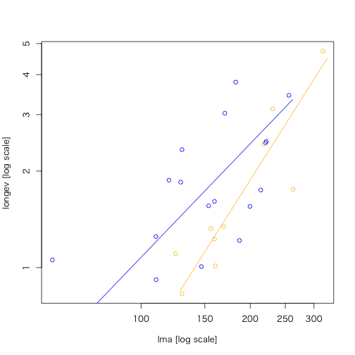

smatr: (Standardised) Major Axis Estimation and Testing Routines
> library(smatr)
Loading required package: plyr
-------------------------------------------------------------------------
You have loaded plyr after dplyr - this is likely to cause problems.
If you need functions from both plyr and dplyr, please load plyr first, then dplyr:
library(plyr); library(dplyr)
-------------------------------------------------------------------------
Attaching package: 'plyr'
The following objects are masked from 'package:dplyr':
arrange, count, desc, failwith, id, mutate, rename, summarise,
summarize
> library(dplyr)
バージョン: 3.4.3
| 関数名 | 概略 |
|---|---|
coef.sma |
Extract coefficients from a 'sma' or 'ma' fit |
elev.com |
Test for equal elevation among several lines fitted with (standardised) major axes of common slope. |
elev.test |
One-sample test of a (standardised) major axis elevation |
fitted.sma |
Returns fitted values |
leaflife |
Leaf longevity and leaf mass per area for plant species from different sites |
leafmeas |
Leaf mass per area and photosynthetic rate for plant species from different sites |
line.cis |
Slope and elevation of a (standardised) major axis, with confidence intervals |
makeLogMinor |
Generate spacing for minor tick marks on a plot with log-scaled axes |
meas.est |
Measurement error variance estimation from repeated measures |
multcompmatrix |
Multiple comparisons graphical matrix |
plot.sma |
Draw an X-Y plot |
plotutils |
Utility plotting functions |
print.sma |
Print an object of class 'sma'. |
residuals.sma |
Extract model residuals |
seqLog |
Sequence Generation |
shift.com |
Test for no mean shift along a common (standardised) major axis |
slope.com |
Common slope test amongst several allometric lines |
slope.test |
One-sample test of a (standardised) major axis slope |
sma |
(Standardized) major axis estimation and testing for one or several samples |
smatr-package |
(Standardised) Major Axis Estimation and Testing Routines |
summary.sma |
Print a summary |
leaflife （データセット）
> data("leaflife")
> str(leaflife)
'data.frame': 67 obs. of 5 variables:
$ site : Factor w/ 4 levels "1","2","3","4": 1 1 1 1 1 1 1 1 1 1 ...
$ rain : Factor w/ 2 levels "high","low": 1 1 1 1 1 1 1 1 1 1 ...
$ soilp : Factor w/ 2 levels "high","low": 1 1 1 1 1 1 1 1 1 1 ...
$ longev: num 1.115 0.516 0.972 0.672 1.095 ...
$ lma : num 125.5 82.3 71 94.7 119.7 ...
> # site... 種の形質データを調査した地点コード
> # rain... 各siteの年降雨量の区分（high or low）
> # solip... 各siteにおける土壌窒素濃度の水準（high or low）
> # longev... 葉寿命（単位は年）
> # lma... 葉の面積あたりの重量(m2/kg)
> summary(leaflife)
site rain soilp longev lma
1:17 high:34 high:40 Min. :0.5162 Min. : 56.94
2:17 low :33 low :27 1st Qu.:1.0100 1st Qu.:116.05
3:23 Median :1.4591 Median :153.60
4:10 Mean :1.6676 Mean :162.12
3rd Qu.:2.1318 3rd Qu.:202.79
Max. :4.7304 Max. :333.89
sma:
II型回帰モデル。複数ある形式にも対応。
leaflife %>% filter(soilp == "low", rain == "low") %>%
> leaflife %$% ma(longev ~ lma, log = 'xy', data = .) # MA
Call: sma(formula = ..1, data = ..3, log = "xy", method = "MA")
Fit using Major Axis
These variables were log-transformed before fitting: xy
Confidence intervals (CI) are at 95%
------------------------------------------------------------
Coefficients:
elevation slope
estimate -3.085214 1.492616
lower limit -3.968020 1.146777
upper limit -2.202407 2.001084
H0 : variables uncorrelated
R-squared : 0.4544809
P-value : 0.00000000040171
回帰が有意なものであるか（slope = 1）を検証
> leaflife %$% ma(longev ~ lma, log = 'xy', slope.test = 1, data = .) %T>%
+ summary(.) -> res
Call: sma(formula = ..1, data = ..4, log = "xy", method = "MA", slope.test = 1)
Fit using Major Axis
These variables were log-transformed before fitting: xy
Confidence intervals (CI) are at 95%
------------------------------------------------------------
Coefficients:
elevation slope
estimate -3.085214 1.492616
lower limit -3.968020 1.146777
upper limit -2.202407 2.001084
H0 : variables uncorrelated
R-squared : 0.4544809
P-value : 0.00000000040171
------------------------------------------------------------
H0 : slope not different from 1
Test statistic : r= 0.3515 with 65 degrees of freedom under H0
P-value : 0.0035393
0.0035393 であるので１より有意（P < 0.05）に異なる傾き slopeであるという結果となった
残差プロットを描く
> plot(res, type = "residual")
（なにも描画されない？？）
> # 土壌窒素濃度が低いサイトのデータを抽出
> leaf.low.soilp <- filter(leaflife, soilp == "low")
> # nrow(leaf.low.soilp) # 27
降水量の高いサイト、低いサイトそれぞれでSMAによる当てはめ、傾きの違いを比較
> leaf.low.soilp %>% sma(formula = "longev ~ lma * rain",
+ log = "xy", data = .) %>% {
+ print(.)
+ plot(.)
+ }
年降雨量の多さ（high and low）が葉寿命に効いていないという帰無仮説H0に対して、P = 0.12395が得られた。帰無仮説を棄却することはできないということになる。
